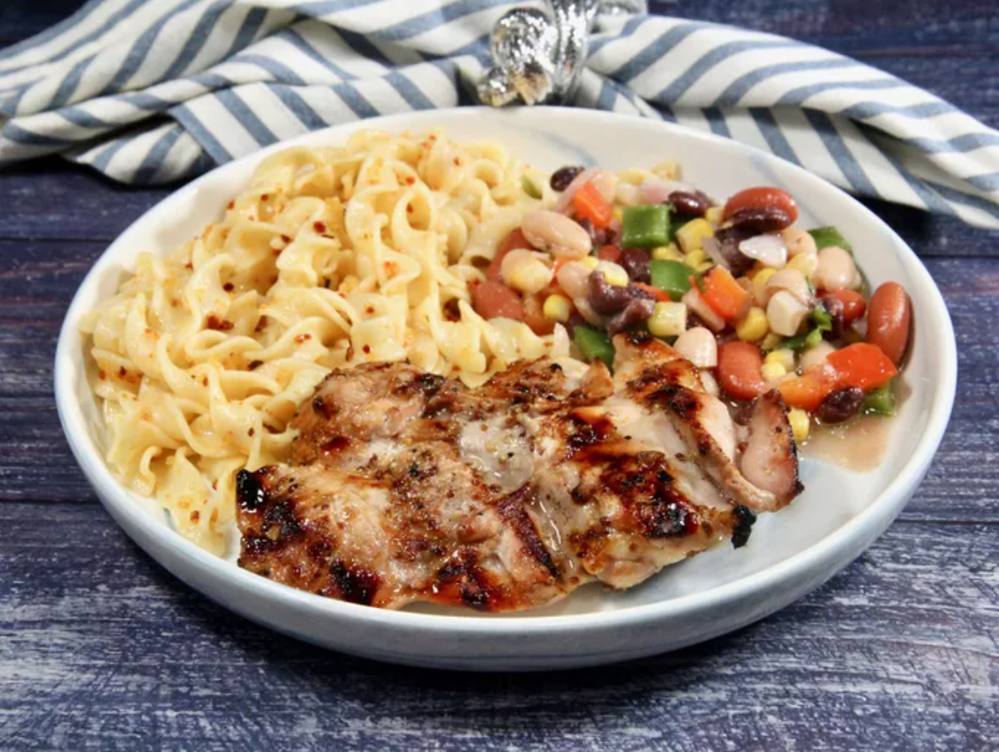

Back to Home
Unbelievable Chicken Recipe

Description
The unusual combination of easy ingredients in this marinade for chicken is fabulous! Everyone who tastes it asks me to share the recipe. You will love it and the many compliments you get — I promise!
Ingredients
- ¼ cup cider vinegar
- 3 tablespoons prepared coarse-ground mustard or to taste
- 3 cloves garlic, peeled and minced
- 1 lime, juiced
- ½ lemon, juiced
- ½ cup brown sugar or to taste
- 1½ teaspoons salt or to taste
- Ground black pepper to taste
- 6 tablespoons olive oil
- 6 skinless, boneless chicken breast halves
Directions
- Mix cider vinegar, mustard, garlic, lime juice, lemon juice, brown sugar, salt, and pepper together in a large glass or ceramic bowl. Whisk in olive oil. Add chicken and toss evenly to coat. Cover, and marinate in the refrigerator for 8 hours to overnight.
- Preheat an outdoor grill for high heat.
- Lightly oil the grill grate. Place chicken on the preheated grill, and cook 6 to 8 minutes per side, until juices run clear. Discard any remaining marinade.